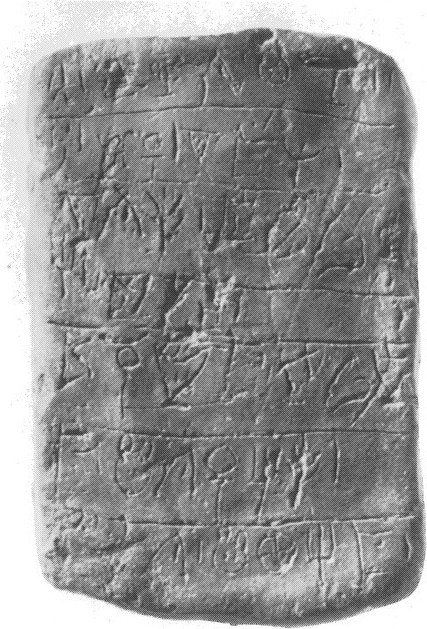
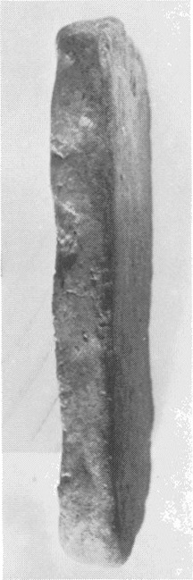
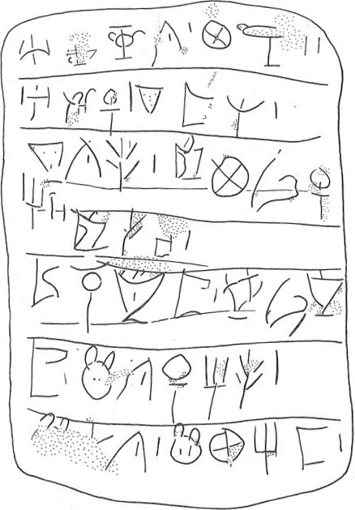
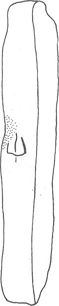

| side.line | statement | number |
| .1 | SI-[•]-NE-TI | 1 |
| .1 | KA- QA | 2 |
| -------------------------------------------------------------- ---------------------------- | ||
| .2 | A-DU-ZA | 1 |
| .2 | TA 2 -TA-RE | 1 |
| -------------------------------------------------------------- ---------------------------- | ||
| .3 | TA 2 -TI-TE | 1 |
| .3-4 | O-KA-MI-ZA-SI-I-NA | 1 |
| -------------------------------------------------------------- ---------------------------- | ||
| .5 | O- TE - JA | 1 |
| -------------------------------------------------------------- ---------------------------- | ||
| .6 | RA-NA-TU-SU | 1 |
| .6 | NI- MI | 1 |
| -------------------------------------------------------------- ---------------------------- | ||
| .6-7 | TU -SU | 1 |
| .7 | MA-TI-ZA-I-TE | 1 |
| -------------------------------------------------------------- ---------------------------- | ||
| .8 | MA - TE -TI | 1 |
| .8 | MA-KA-I-TA | 1 |